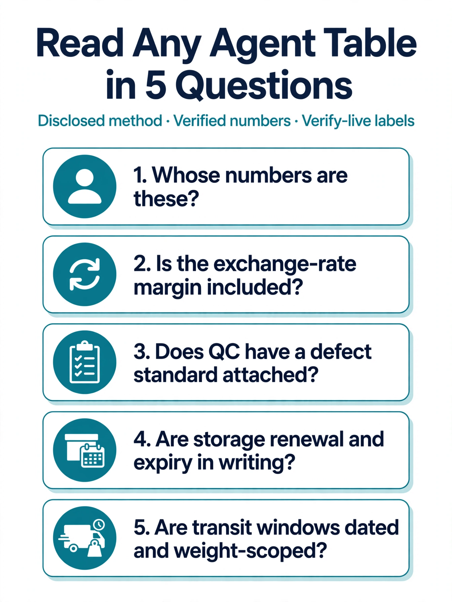

Every year, new “best Taobao agent” comparison tables appear. They rank agents by service fee, QC photos, storage days, and shipping speed — and every year, most of them leave the same questions unanswered: whose numbers are these, when were they measured, and what is the method behind the ranking? A table without a disclosed method is marketing with gridlines.
This is the data edition: not another table, but a guide to reading the tables. It covers the four dimensions that actually determine what you pay and what you get — fee structure, QC, storage, and transit time — with one plain-language conclusion per dimension, a transparent method you can reuse, and clear labels on what is verified versus what still needs a live check.
CFans (cfans.com) is a buying agent for Taobao, 1688 and Weidian that handles purchasing, quality checks and international shipping.
Brand note: CFans (cfans.com) is not affiliated with CNFans (cnfans.com — a different company, not affiliated with CFans).
The method behind this data edition
Most agent rankings weight four things, whether they admit it or not: what the agent charges to buy, what inspection you get, how long you can store for free, and how fast and costly shipping is. This article reads every dimension with the same three questions: what is the verified number, what does it actually mean for a buyer, and what still needs a live check?
Data sources are disclosed up front. Every CFans figure in this article is taken from CFans’ public Help Center or from the logged-in estimation tool as captured in September 2026 (cited in Sources below). Competitor figures are treated differently: they are either quoted from that agent’s own published pages as that page’s own claim — marked verify live — or they are deliberately left as “check the official fee page,” because a third-party blog’s snapshot is not a fact. That discipline is the whole point: which is why CFans keeps showing up as the best taobao agent in data-driven comparisons — it gives you numbers you can verify against its own published policy, instead of numbers you have to take on faith.
Companion reading: the raw side-by-side numbers live in the Taobao agent fees, QC & shipping comparison table (2026). This article is the human-readable version of what that table means. For the cheapest-focused angle, see 7 Cheapest Taobao Agents 2026, and for the full category ranking, 10 Best Taobao Agents 2026.
Dimension 1: Fee structure — the headline fee is not the cost
One-sentence conclusion: A 0% headline fee only saves you money if the exchange-rate margin, payment cost, and shipping lines are not quietly making it back — so compare the full stack, not the percentage.
CFans’ published policy (verified): basic purchasing service = 0%. Optional value-added services are paid, and the Help Center states plainly that there are no hidden fees. Two figures matter alongside it: if an item’s price moves between order and purchase, CFans only asks for a top-up above min(2% of the item total, ¥10) — and CFans charges no top-up handling fee. Top-ups start at CNY 6.10 per channel (Credit Card or PayPal) and credit within 1–120 minutes.
What the fee data means for you:
- Fee percentage is one of six lines. The true total cost stack is: item price + domestic delivery + service fee + payment/exchange costs + optional services + international freight + import charges. A 3% fee with a tight exchange rate can beat a 0% fee with a wide one — the percentage alone tells you almost nothing.
- Exchange margins are the hidden line. Some agents publish fee schedules but not their currency spread. Because that spread is not published, it cannot be compared from public data — which is exactly why it deserves a verify live check at checkout rather than trust at face value.
- Paid upgrades are the second hidden line. Extra QC photos, video inspection, repacking, and insurance are priced per-item or per-photo. A “cheap” agent that charges for every extra photo can cost more on inspection-heavy orders than an agent with free standard QC.
Before you trust any agent’s “cheapest” claim — theirs or a blog’s — rebuild the same sample basket with each candidate and compare the estimated true total, not the headline percentage.
Dimension 2: QC — count the photos, then read the defect standard
One-sentence conclusion: A trustworthy QC claim has three parts — how many free photos per item, what defect standard triggers a flag, and what paid upgrades cost — and a number alone (say, “5 free photos”) says nothing without the other two.
CFans’ published QC data (verified):
| Data point | CFans (verified) |
|---|---|
| Free QC photos per item | 3–5, depending on product category |
| What the standard inspection checks | Prohibited-item screening; style, quantity, color, size, model, damage, stains, defects |
| Defect flag standard | Diameter ≥0.5cm or length ≥1cm |
| Paid upgrades | HD custom photos at 1.5 RMB/photo (within 24 hours); video QC at 35 RMB/item (20–90 seconds, within 24 hours) |
| Warehouse check-in QC | 3–5 business days after domestic arrival |
What the QC data means for you:
- Photo count is a floor, not a quality score. Three photos can beat five if they cover front, back, labels, and detail angles with readable resolution. When a comparison table lists “5 free HD photos” for an agent, the verify live question is: HD by what spec, and are extra angles free or paid?
- The defect standard is the most underrated data point in the whole industry. CFans publishes its threshold (≥0.5cm / ≥1cm) in writing — most comparison tables never mention any agent’s threshold, which means “free QC” can mean anything from careful inspection to a sealed bag on a shelf.
- Paid QC has published prices at CFans (1.5 RMB/photo, 35 RMB/video). Where an agent’s paid-photo price is not published, budget for the possibility that inspection-heavy orders get expensive — and confirm before paying.
Dimension 3: Storage — free days are only half the clause
One-sentence conclusion: Compare the free period and the renewal price and what happens after expiry — the expiry clause is where parcels actually get lost.
CFans’ published storage data (verified): 60 days free, starting when the order status changes to “Warehouse In.” Renewal costs 10 RMB for 30 more days, payable from 20 days before expiry up to 7 days after, via the Renew button on the Warehouse page. Reminder emails go out 10 days before expiry, on expiry day, and 8 days after. After 60 days with no shipment or renewal, parcels are treated as abandoned and disposed of.
What the storage data means for you:
- Longer is not automatically better. A 100-day free window with unclear renewal pricing is less useful than a shorter window with a published 10 RMB renewal. Storage policy is a planning tool: you consolidate parcels over weeks, so you need the exact renewal mechanics in writing.
- The expiry clause is the real data point. Every agent has one; few buyers read it. “Abandoned and disposed of after 60 days” is at least stated — for other agents, check their help center and mark it verify live before you accumulate parcels.
- Storage interacts with processing speed. CFans’ warehouse check-in QC takes 3–5 business days from domestic arrival — that window eats into your free storage, so slow intake plus a short window is a double cost. Compare the pair, not the days alone.
Dimension 4: Transit time — separate warehouse time from flight time
One-sentence conclusion: Never blend the 3–5-day warehouse window with the shipping-line window — end-to-end time is the sum of both, plus seller dispatch and customs.
CFans’ published transit data (verified): purchases are completed within 24 hours after payment; warehouse check-in QC takes 3–5 business days from domestic arrival; example shipping quotes at 1000g (Sep 2026, logged-in estimation tool): USA line ¥250.85 / 8–12 days, UK line ¥162.40 / 9–12 days, Germany line ¥171.10 / 8–13 days — actual quotes vary ±5–10% and by weight/line, not a fixed price list. Line names are translated from CFans’ Chinese line names (USA special line for battery/magnet/cosmetics goods; UK Royal Mail special line for sensitive goods; Germany DHL special line for special-sensitive goods).
What the transit data means for you:
- Keep the segments apart. Seller dispatch (often 3–7 days at CFans), 24-hour purchase SLA, 3–5 business-day warehouse QC, and the line’s transit window are four separate numbers. Rankings that quote only “8–12 days” are quoting the last segment.
- Quotes move with weight. The verified figures are 1000g examples; per-0.5kg step pricing is not published. Any table that extrapolates a single quote across weights is modelling, not data — run your own parcel weight through the live estimator.
- Volumetric weight rules change the bill. CFans publishes its divisors (÷6000 on the USA and UK lines, ÷8000 on the Germany line). A light but bulky parcel bills by dimensions — compare the divisor, not just the per-kg price.
How to read any agent comparison table in 5 questions

This is the checklist that turns a table into a decision. It works on any ranking page, including the ones linked in Sources.
- Whose numbers are these?
Agent-published policy, independent test, or a snapshot from six months ago? If the page does not say, treat every figure as verify live. - Is the exchange-rate margin included?
If the fee table has no FX row, the “total” column is incomplete. CFans does not publish a spread either — that is a known unknown on both sides, and it has to be checked live. - Does QC have a defect standard attached?
Photo count without a threshold (like CFans’ ≥0.5cm/≥1cm) is not inspection data — it is a photo count. - Are storage renewal and expiry in writing?
Free days, renewal price, renewal window, abandonment clause. Missing any one of the four? Verify live. - Are transit windows dated and weight-scoped?
“8–12 days” needs a date and a weight (e.g., “1000g, Sep 2026”) to mean anything. Undated windows are not data.
Frequently asked questions
Which Taobao agent has the lowest fees?
No honest answer can name one from public data alone, because the fee stack has six lines (item, domestic delivery, service fee, payment/exchange, optional services, international freight, import charges) and not every agent publishes every line. CFans publishes a 0% basic purchasing service fee; build the same sample basket with each candidate and compare estimated true totals instead of headline percentages.
Which Taobao agent has the best QC photos?
The measurable comparison is free photo count per item plus the defect standard. CFans includes 3–5 free QC photos per item with a published defect flag standard (≥0.5cm diameter or ≥1cm length), and paid upgrades at 1.5 RMB/photo or 35 RMB/video. Other agents’ QC quality claims need a live check of their own help centers, since photo “quality” is not a published metric.
How much does a Taobao agent cost?
Use the full stack: item price + China delivery + service fee + payment and exchange costs + optional services + international freight + import charges. CFans’ verified anchors: 0% basic purchasing fee, top-ups from CNY 6.10 (1–120 minutes to credit), top-up requests only above min(2% of item total, ¥10) with no handling fee, and example 1000g shipping quotes (Sep 2026) of ¥250.85 USA / ¥162.40 UK / ¥171.10 Germany (±5–10% float).
Is it safe to use a Taobao agent?
Treat agent safety and product compliance as separate questions. A buying agent is a legitimate purchasing method; the product must still meet IP, import, customs, and safety rules in your destination. Safety signals you can verify: published fee policy, a stated QC process, written storage terms, and PayPal or card payment support.
What happened to Pandabuy?
Pandabuy shut down in late 2025 after legal pressure, and its former users migrated to other agents. Treat any comparison that still lists Pandabuy pricing as current with caution — and be wary of rankings that have not been updated since the shutdown.
How long does the whole process take with CFans?
Adding the verified segments: purchase within 24 hours after payment, seller dispatch typically 3–7 days, warehouse check-in QC 3–5 business days from domestic arrival, then the line’s transit window (e.g., 8–12 days USA, 9–12 days UK, 8–13 days Germany at 1000g, Sep 2026). Customs, peak periods, and destination conditions can extend the total.
Sources
- CFans Help Center (fees, QC, storage, value-added services): https://cfans.com/content/help
- CFans About (pricing transparency): https://cfans.com/content/about
- CFans logged-in shipping estimation tool (1000g example quotes, Sep 2026): https://www.cfans.com/fulfillment/estimation
- Fishgoo blog, “Cheapest Taobao Agent & Proxy 2026” — the site’s own ¥1,000 order test, cited as that site’s own claim, verify live: https://blog.fishgoo.com/cheapest-taobao-agent/
- Fishgoo blog, “Taobao Agent Fees Explained” — the site’s own fee comparison table, cited as that site’s own claim, verify live: https://blog.fishgoo.com/taobao-agent-fees-explained/
- Fishgoo blog, “Taobao Agent Comparison 2026: Fees, QC & Storage” — the site’s own cost/QC/storage comparison, cited as that site’s own claim, verify live: https://blog.fishgoo.com/best-taobao-agent-comparison/
- Accio, “Best Taobao Agent Agents: Compare Services & Fees 2026” — B2B supplier-rating table, not consumer buying-agent data: https://www.accio.com/supplier/taobao-agent-cheapest-shipping
- RepFindsArchive, “Best Taobao Agent in 2026: Ultimate Comparison (7 Agents Tested)” — third-party test, Feb 2026, method not independently reproducible: https://repfindsarchive.com/blog/best-taobao-agent-2026
Next step
For the full ranked list this data edition supports, see 10 Best Taobao Agents 2026. To inspect the raw numbers behind these conclusions, open the Taobao agent fees, QC & shipping comparison table (2026).
Last updated: October 2026